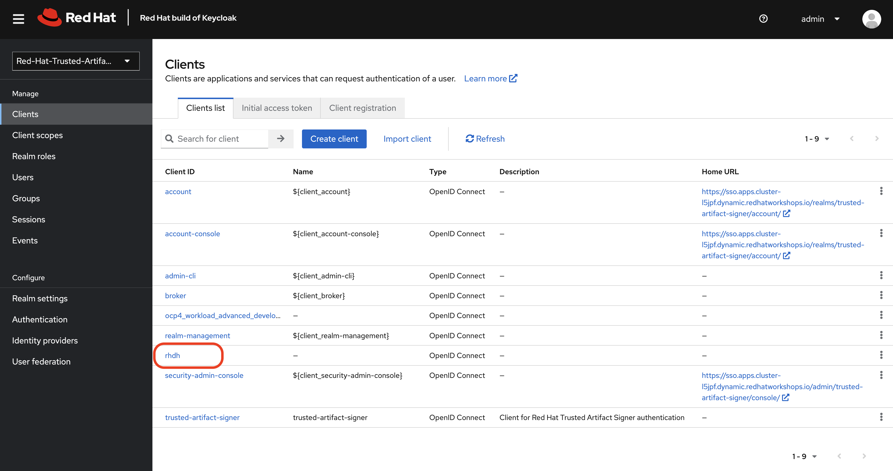
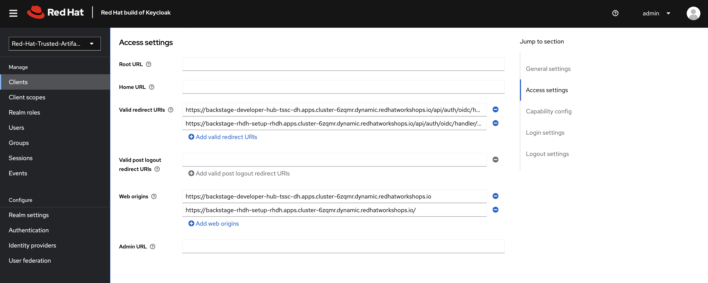
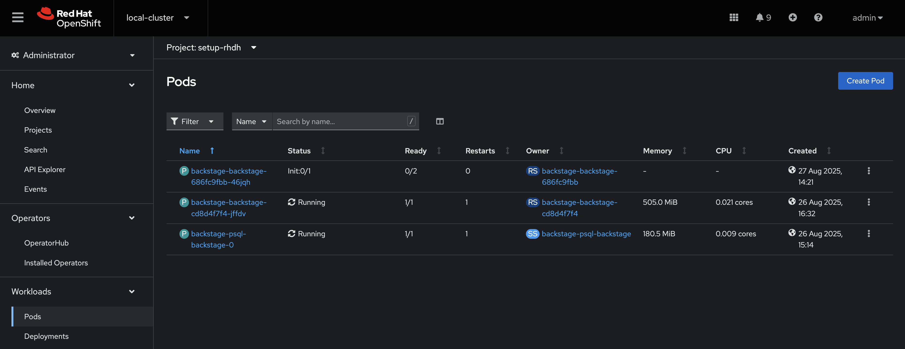
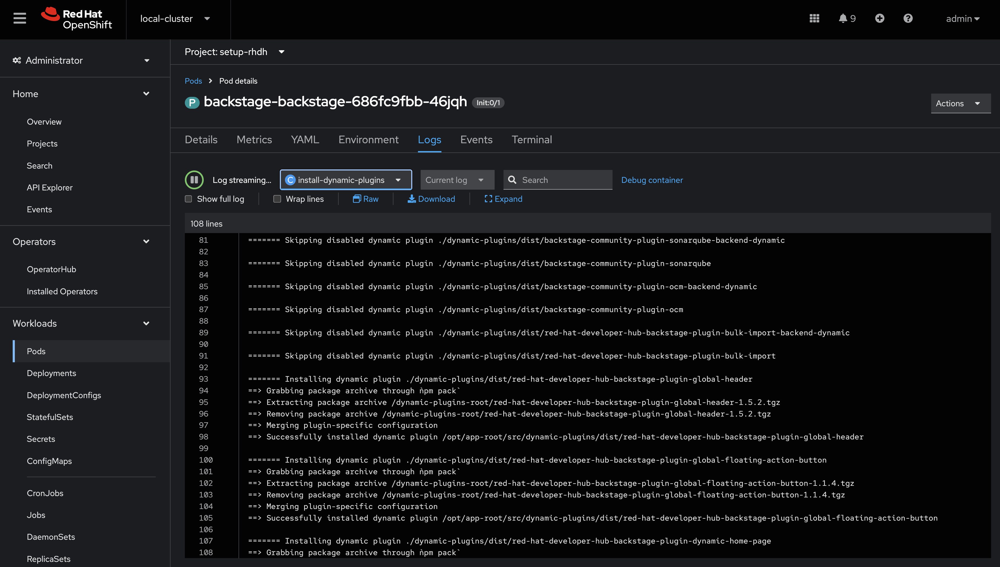
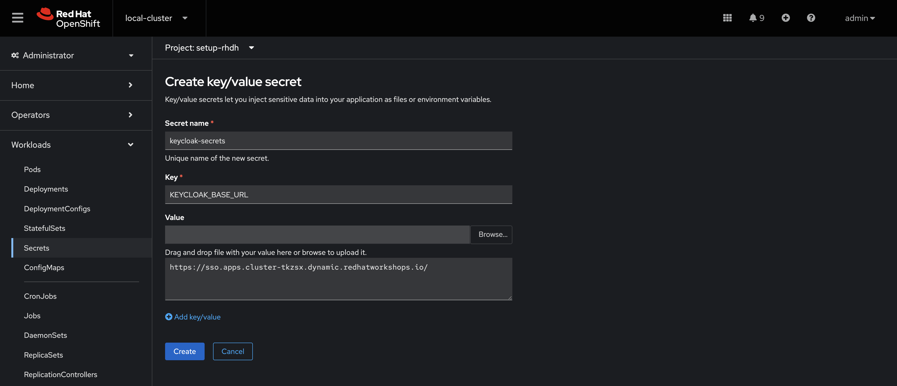
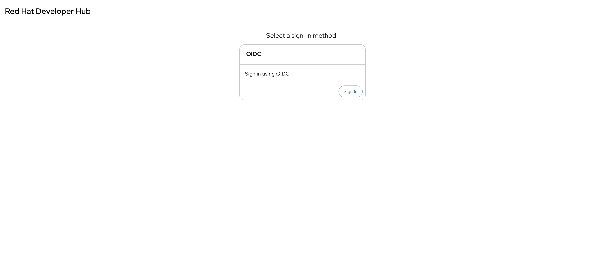
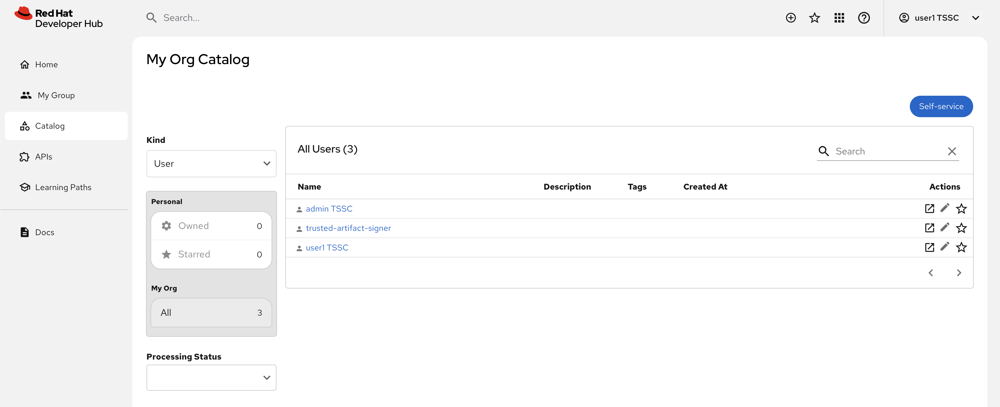

Configure your First Plugin (Authentication)
In this section you’ll learn how to enable authentication for Red Hat Developer Hub using Keycloak as an OpenID Connect provider. Various authentication providers are supported and can be found in the Red Hat Developer Hub documentation.
Plugin Architecture
Red Hat Developer Hub includes a comprehensive set of pre-installed dynamic plugins that extend its functionality beyond the core Backstage capabilities. These plugins are based on the dynamic plugin architecture and provide integrations with various tools and services commonly used in enterprise development environments.
Pre-installed dynamic plugins include integrations for:
-
Authentication providers (Keycloak, GitHub, GitLab)
-
Source control systems (GitHub, GitLab, Bitbucket)
-
CI/CD platforms (Jenkins, Tekton, GitHub Actions)
-
Container registries and Kubernetes
-
Monitoring and observability tools
-
Documentation platforms
While these plugins are pre-installed with Red Hat Developer Hub, most must be explicitly enabled and configured to function properly. This design allows administrators to selectively activate only the integrations needed for their specific environment.
|
Third-party plugins can also be integrated with Red Hat Developer Hub, but they require proper packaging and configuration. For more information on working with third-party plugins, refer to the official documentation. |
Prepare a Keycloak Realm
The Keycloak plugin enables Red Hat Developer Hub to integrate with Keycloak for authentication and to import User and Group entities into the Backstage catalog. The presence of User and Group entities in the Software Catalog is essential for assigning ownership to other entities, and to facilitate user login. A user’s login attempt to Red Hat Developer Hub will fail if a corresponding User entity matching their email/username doesn’t exist in the Software Catalog.
Your environment includes a preconfigured Keycloak instance with a trusted-artifact-signer realm and rhdh client that acts as an OpenID Connect authentication provider already set up for Red Hat Developer Hub integration, however you need to make sure it’s configured with the correct redirect URL for authentication to be successful.
Accessing Keycloak
Keycloak has been pre-deployed on your OpenShift cluster in the tssc-keycloak project. Accessing Keycloak requires its URL and admin password:
-
Visit the Secrets screen in the tssc-keycloak namespace.
-
Click the
keycloak-initial-adminSecret to view it. -
Copy the
passwordvalue from the Secret. -
View the clients list in the
trusted-artifact-signerrealm in Keycloak - login as admin using the password you copied from the Secret.You can find the Keycloak URL by visiting the Networking > Routes screen in the OpenShift Web Console and making sure that the
tssc-keycloakproject is selected, but the link above is provided for convenience. -
Click the
rhdhclient.
The General settings screen for the client will be displayed. You need to add your Red Hat Developer Hub URL to the Web origins and Valid redirect URIs.
Update the Redirect URLs and Web Origins
Failure to set a valid redirect URL will result in login failures when you attempt to use Keycloak as an authentication provider with Red Hat Developer Hub. This is because Keycloak will not recognise your Red Hat Developer Hub hostname as a registered application and refuse to complete the authentication flow - this is standard OAuth/OpenID behavior.
-
Add the following value to Valid redirect URIs:
https://backstage-rhdh-setup-rhdh.{openshift_cluster_ingress_domain}/api/auth/oidc/handler/frame -
Add the following value to Web origins
https://backstage-rhdh-setup-rhdh.{openshift_cluster_ingress_domain}Do not delete the existing Web origins and Valid redirect URIs!
-
Your result should resemble this screenshot, albeit with different URL values.
 -
Click Save.
The path for the redirect URL is /api/auth/oidc/handler/frame as documented in Backstage’s OIDC reference and our Red Hat Developer Hub documentation.
Install a Dynamic Plugin
Dynamic plugins in operator-based deployments of Red Hat Developer Hub are configured using a dedicated ConfigMap. This ConfigMap defines which plugins should be enabled and their specific configuration parameters.
Understanding Plugin Configuration
The Red Hat Developer Hub Operator reads plugin configurations from a ConfigMap that contains a dynamic-plugins.yaml file. This configuration file specifies:
-
Which plugins to enable or disable
-
Plugin-specific configuration parameters
-
Dependencies and package information
For detailed information on configuring dynamic plugins with the operator, refer to the official plugin configuration guide.
Create the Dynamic Plugins ConfigMap
As mentioned earlier, certain plugins are preinstalled in the Red Hat Developer Hub. These plugins have gone through our productisation process to verify they’re compatible with the specific version of Backstage that Red Hat Developer Hub is built from, and to facilitate installation at runtime.
Using upstream Backstage requires plugins to be installed from a registry. For example, upstream Backstage would require a platform engineer to install a compatible version of @backstage-community/plugin-catalog-backend-module-keycloak from npm and make code changes to their Backstage instance. With Red Hat Developer Hub no such code changes or version matrix concerns are necessary.
Get started by creating a minimal dynamic-plugins-rhdh ConfigMap that enables the Keycloak plugin.
-
Log in to the {openshift_console_url}[OpenShift Web Console^].
-
Navigate to Workloads > ConfigMaps.
-
Ensure the
setup-rhdhproject is selected. -
Click the Create ConfigMap button.
-
Switch to the YAML view, delete the existing content, then paste the following configuration:
apiVersion: v1 kind: ConfigMap metadata: name: dynamic-plugins-rhdh namespace: setup-rhdh data: dynamic-plugins.yaml: | includes: - dynamic-plugins.default.yaml plugins: - package: ./dynamic-plugins/dist/backstage-community-plugin-catalog-backend-module-keycloak-dynamic disabled: false -
Click Create to create the ConfigMap.
Update the Backstage Custom Resource
You need to update your Backstage CR to reference the dynamic plugins ConfigMap.
-
Navigate to Operators > Installed Operators in the OpenShift Web Console.
-
Click on the Red Hat Developer Hub operator.
-
Select the Red Hat Developer Hub tab, then click on your
rhdhinstance.Be sure to select the rhdh instance from the list. Modifying other listed Backstage instances could impact future modules.
-
Click the YAML tab to edit the resource.
-
Update the
spec.applicationsection to include the dynamic plugins configuration:spec: application: appConfig: mountPath: /opt/app-root/src configMaps: - name: rhdh-config # Add this line to your existing Backstage CR dynamicPluginsConfigMapName: dynamic-plugins-rhdh route: enabled: trueThe Backstage CR might show additional properties not listed in the example above - do not delete these. Simply add the new
dynamicPluginsConfigMapName: dynamic-plugins-rhdhline as shown. -
Click Save to apply the changes.
Verify Plugin Installation
A new Backstage pod was created after you updated the CR. Check the pod logs to view the plugin installation process:
-
Visit Workloads > Pods and select the latest Backstage pod - it will most likely be showing an
Initstatus. -
Select the Logs tab and select the install-dynamic-plugins container.
-
Find log lines that state
Installing dynamic plugin- these should match the plugins you enabled in your ConfigMap. -
Wait for the installation process to finish (
Removed lock filewill be printed in the logs)
After the installation process is complete, you’ll notice that the new pod crashes. Change the selected container in the Logs screen from install-dynamic-plugins to backstage-backend. You’ll see an error stating that a required configuration for the Keycloak plugin is missing.
ForwardedError: Module 'catalog-backend-module-keycloak' for plugin 'catalog' startup failed; caused by Error: Missing required config value at 'catalog.providers.keycloakOrg.default.baseUrl' in 'app-config.dynamic-plugins.yaml'Fret not! Your previous Red Hat Developer Hub pod is still healthy and serving your developers. You’ll address the missing Keycloak configuration in the next section.
Configure the Keycloak Plugin
Create Keycloak Integration Secret
First, create a Secret to store Keycloak connection details:
-
In the OpenShift Web Console, navigate to Workloads > Secrets.
-
Ensure the
setup-rhdhproject is selected. -
Click Create > Key/value secret.
-
Set the secret name to:
keycloak-secrets -
Add the following key-value pairs (enter the Key name in the
Keyfield, then the value in the text box below the "Value" box, and click "Add key/value" to add the next pair):)Key Value KEYCLOAK_BASE_URLKEYCLOAK_LOGIN_REALMtrusted-artifact-signerKEYCLOAK_REALMtrusted-artifact-signerKEYCLOAK_CLIENT_IDrhdhKEYCLOAK_CLIENT_SECRET{rhdh_user_password} -
Click Create.
Both a KEYCLOAK_LOGIN_REALM and KEYCLOAK_REALM are defined so it’s possible that the realm used for login is not the same as the realm used to source Users and Groups for the Software Catalog.
Update the Backstage Configuration
Update your app-config.yaml to include Keycloak integration:
-
Navigate to Workloads > ConfigMaps and click on
rhdh-config. -
Ensure the
setup-rhdhproject is selected. -
Click Edit ConfigMap.
-
Replace the
app-config.yamlcontent with:Replace just the contents of
app-config.yamlin the ConfigMap. Do not overwrite the entire ConfigMap. Make sure you indent the new configuration correctly - you can highlight multiple lines in the editor and press TAB to indent them.app: title: Red Hat Developer Hub baseUrl: https://backstage-rhdh-setup-rhdh.{openshift_cluster_ingress_domain} signInPage: oidc auth: environment: production session: secret: replace-with-a-random-value providers: oidc: production: metadataUrl: ${KEYCLOAK_BASE_URL}/realms/${KEYCLOAK_REALM}/.well-known/openid-configuration clientId: ${KEYCLOAK_CLIENT_ID} clientSecret: ${KEYCLOAK_CLIENT_SECRET} prompt: auto backend: baseUrl: https://backstage-rhdh-setup-rhdh.{openshift_cluster_ingress_domain} cors: origin: https://backstage-rhdh-setup-rhdh.{openshift_cluster_ingress_domain} catalog: providers: keycloakOrg: default: baseUrl: ${KEYCLOAK_BASE_URL} loginRealm: ${KEYCLOAK_REALM} realm: ${KEYCLOAK_REALM} clientId: ${KEYCLOAK_CLIENT_ID} clientSecret: ${KEYCLOAK_CLIENT_SECRET} schedule: frequency: minutes: 5 timeout: minutes: 3 initialDelay: seconds: 15 -
Click Save.
This configuration replaces the Guest authentication provider with a production-ready OpenID Connect authentication flow. Additionally, you added a new catalog.providers configuration.
As a reminder, the Software Catalog in Backstage (and thus Red Hat Developer Hub) contains entities that represent your deployed software, services, APIs, and resources such as file storage, databases, and message queues. It’s possible to point to static locations (YAML files available over HTTPS) that contain the description and relationships between these entities. Providers are plugins that provide an integration to dynamically fetch entities from external sources. The Keycloak plugin will fetch Users and Groups from a configured realm, and add them to the Software Catalog as entities.
Update Backstage CR with Secret References
Update your Backstage CR to reference the Keycloak secrets:
-
Navigate to your Backstage Custom Resource in the OpenShift Web Console and click the YAML tab.
-
Update the
spec.applicationsection to inject the keys and values from the secret into the pod’s environment using theextraEnvs.secretsarray:spec: application: appConfig: mountPath: /opt/app-root/src configMaps: - name: rhdh-config dynamicPluginsConfigMapName: dynamic-plugins-rhdh # This new property will read the listed secret(s) and inject # their key-value pairs as environment variables in the pod extraEnvs: secrets: - name: keycloak-secrets route: enabled: true -
Click Save to trigger a new deployment of your Red Hat Developer Hub instance.
More information on custom configurations that load data from Secrets and ConfigMaps can be found in the configuring Red Hat Developer Hub documentation.
Verify Keycloak Integration
A new Red Hat Developer Hub pod will be created. Observe the rollout:
-
Select Workloads > Pods in the OpenShift Web Console.
-
Ensure the
setup-rhdhproject is selected. -
Two
backstage-rhdhPods should be listed. Wait for the newer Pod to become ready, then click it. -
View the Logs for the backstage-backend container in the Backstage pod.
-
Search for "keycloak" in the log output.
You should find numerous references, including a line that mentions that users and groups will be ingested.
Next, verify the new OpenID Connect login flow is working:
-
Visit your Red Hat Developer Hub instance.
-
You should now see an OIDC sign-in option.
 -
Click Sign In and use the following credentials in the popup that appears:
-
Username:
{rhdh_user} -
Password:
{rhdh_user_password}Since OpenShift and Red Hat Developer Hub share the same authentication realm, you may get automatically logged into Red Hat Developer Hub as the
adminuser. If this happens, Click on the username (admin TSSC) at the upper right, and click Sign Out, and then login as the{rhdh_user}user.
-
-
Once logged in, go to the Catalog set the Kind dropdown to User or Group. Imported User or Group entities will be displayed.
